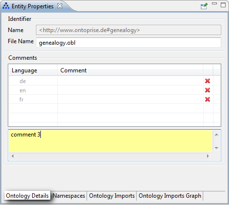
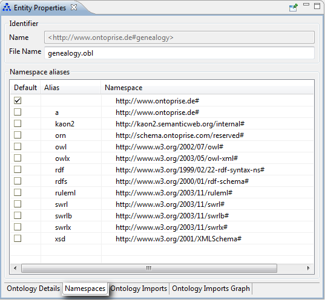
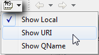
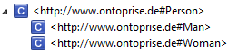
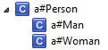
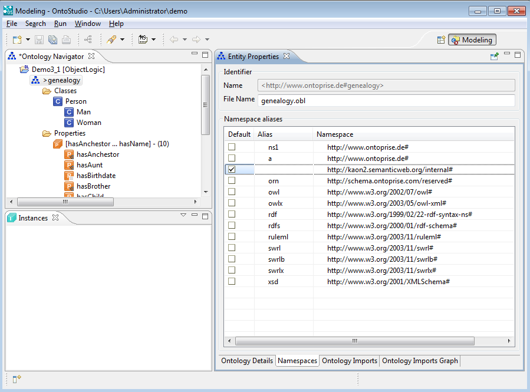
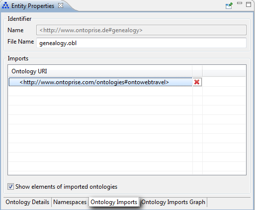
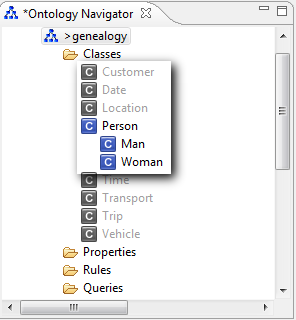
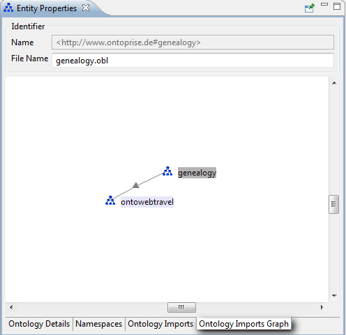

|

|
|
Entity Properties |
|
|
|
|
Entity Properties |
When you select one of the nodes in the Ontology Navigator, the appropriate Entity Properties view displays the details for this entity.
Click on your ObjectLogic project in the navigator for an overview of the project settings. The Entity Properties view is the main work area for viewing and editing ontologies, classes, relations, instances, queries and rules. This chapter describes the tabs of the Entity Properties view.
Ontology Details

| • | Name: The Name of your ontology project. |
| • | File Name: The name of the ontology you are working with (can be changed here). |
| • | Language: The language of the comment. You can have one comment per language. |
| • | Comment: You can add information about your ontology project in this text field. |
Namespaces

A list of defined namespaces with their aliases is displayed. You can add, remove or edit the namespaces and aliases. The default display in the Ontology Navigator and in the Entity Properties pages does not contain the elements' namespace. You can display it by selecting Show URI, as presented below:

And you obtain:

Moreover, you can display the alias by selecting Show QName. The result is:

NOTE: The default namespace is represented by an empty alias.
It is possible to create new entities using namespace aliases. For example, the classes of the same ontology can have different namespaces:

Ontology Imports
OntoStudio provides a functionality for importing facts from other ontology projects. You can enhance these facts on your own but you can't edit them much.The import function section describes how to import ontologies. In the screenshot below, on the Ontology Imports tab of the Entity properties view, you can see that "ontowebtravel" is the imported ontology, which has been imported into the "genealogy" ontology. You can add several ontologies to the imports of an ontology. By flagging the Show elements of imported ontologies checkbox, all facts of the imported ontology will be displayed grey-shaded in the Ontology Navigator, like the classes "Customer", "Date" an "Location".
You can neither modify the imported entities, nor delete them. But you can of course add new elements like classes, properties, instances, etc. Imported rules are also valid in the importing ontology.

| • | Ontology Imports: Select which Ontology will be imported. |

Ontology Imports Graph
All the ontologies that are directly or indirectly visible (via the imports relationship) from this ontology are displayed as a graph. Each ontology is represented by a node and each "import" is represented by a directed link between them. The importing ontology points to the imported one.
